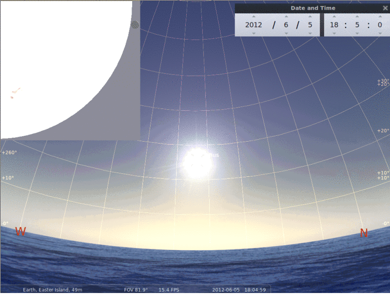

Programa de Eventos
Location: Museo Antropologico P. Sebastian Englert
Hours: 10:30 - 13:00
Astronomy workshop for the whole public. This includes interactive activities demonstrating the properties of light, the solar system, the Moon and its craters, the transit, and much more! We will also present 15 minute talks by the professional astronomers on the team covering diverse topics.
After sunset (18:30) we will observe the night sky from Ahu Tahai, weather permiting.
 Location: Museo Antropologico P. Sebastian Englert
Location: Museo Antropologico P. Sebastian Englert
Hours: 10:30 - 13:00, 4:00-6:00
Astronomy workshop for the whole public. This includes interactive activities demonstrating the properties of light, the solar system, the Moon and its craters, the transit, and much more! We will also present new 15 minute talks by the professional astronomers on the team covering diverse topics.
After sunset (18:30) we will observe the night sky from Ahu Tahai. On this night, there is a partial lunar elicpse that can be observed near dawn of the next day. We will gather before the eclipse start until its end (4:00-6:00).
Location: varied
Hours: varied
Our group of astronomers will visit the various schools on the Island to give brief presentations on the transit along with interactive activies for the students.
Location: Ahu Tahai
Hours: 16:00 - 19:30
Observation of the Venus transit. The transit starts at 16:10 hours and lasts until 22:45. Sunset is at approximatedly 18:30. Hence, we will observe the transit for 2 hours. After the Sun sets there will be a sky show of the night sky.